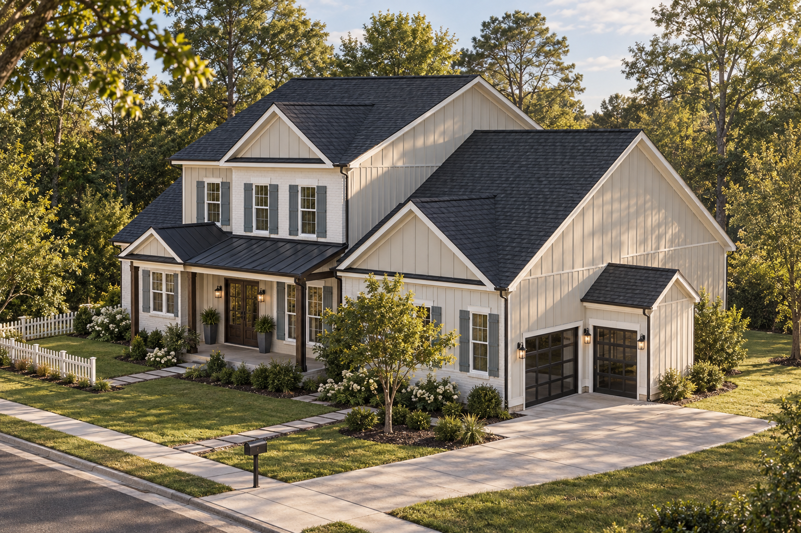

My house · Exterior study
Fit whole image
Explore all 8 views →
Continuity test
Open living room
Nano Banana 2
Nano Banana
ImageGen · Model + photo
Photo only · ¾ view
3D angle reference
Photo treatment
Model treatment
Farmhouse photo
Saved model
Interior style